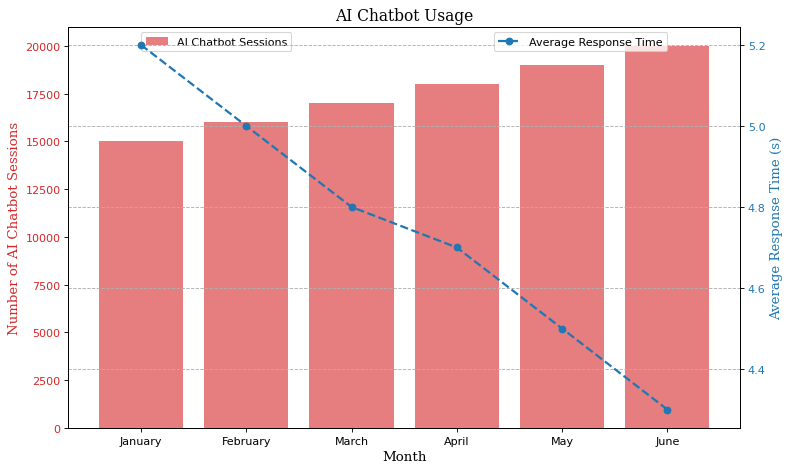

Total failure cases of factor "percentage": 1
| ID | Chart | Question | Additional Information | Pitfalls | Most relevant pitfall |
201.png |
 |
What is the percentage increase in AI chatbot sessions from January to May?
|
{
"Ground Truth": "26.67%",
"Prediction": "27"
}
|
### Potential Pitfalls in the Chart Image: 1. **Rounding Errors**: The model might have rounded the numbers during calculations, leading to a small discrepancy between the predicted and actual values. 2. **Data Point Misinterpretation**: If the data points on the chart are not accurately read or interpreted, it can lead to incorrect calculations. 3. **Incorrect Formula Application**: The model might have applied an incorrect formula for calculating the percentage increase, resulting in a slightly different result. 4. **Visual Estimation**: If the model relies on visual estimation from the chart rather than the exact data provided, there could be inaccuracies. ### Most Relevant Pitfall: The most relevant pitfall here is likely related to **Rounding Errors**. Since the ground truth value is 26.67% and the model's prediction is 27%, it suggests that the model may have rounded the intermediate results or the final percentage to the nearest whole number, leading to a slight difference. <most_relevant>Rounding Errors</most_relevant> |
Rounding Errors |